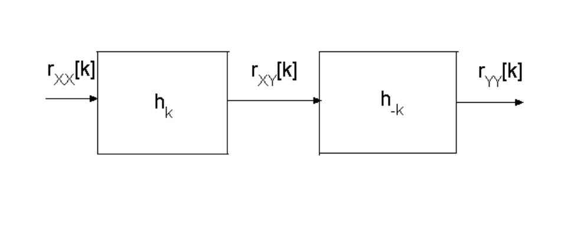
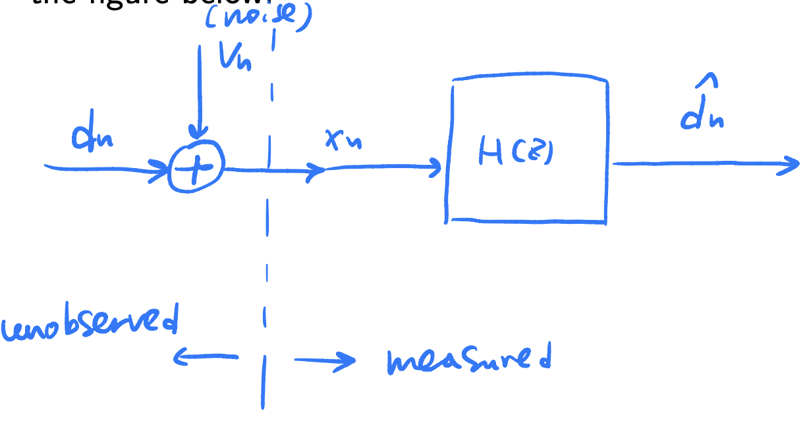
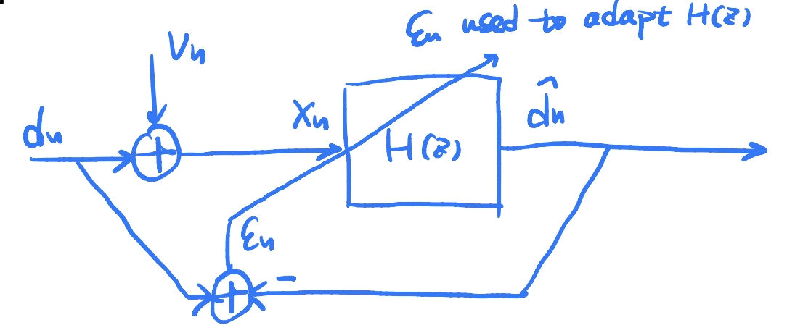

3 Statistical Signal Processing
I. Random processes revision¶
1. Discrete-time random process¶
A discrete time random process is defined as an ensemble of functions $$ {X_n(\omega)}, \quad n = -\infty, ..., -1, 0, 1, ..., \infty $$ where \(\omega\) is a random variable having a probability density function \(f(\omega)\).
2. Correlation functions¶
The mean of a random process \(\{X_n\}\) is defined as \(E[X_n]\). The autocorrelation functions is defined as $$ r_{XX}[n,m]=E[X_nX_m] $$ The cross-correlation function between two processes \(\{X_n\}\) and \(\{Y_n\}\) is $$ r_{XY}[n,m] =E[X_n Y_m] $$
3. Stationarity¶
A stationary process has the same statistical characteristics irrespective of shifts along the time axis. i.e. the Nth order density for the process is unchanged with time shift, where the Nth order density function is
A random process is strict-sense stationary if, for any finite \(c, N\) and \(\left\{n_1, n_2, \ldots n_N\right\}\) :
4. Wide sense stationary¶
A random process is wide-sense stationary (WSS) iff (if and only if) 1. \(\mu_n=\mathbb{E}\left[X_n\right]=\mu\), (mean is constant) 2. \(r_{X X}[n, m]=r_{X X}[m-n]\), (autocorrelation function depends only upon the difference between \(n\) and \(m\) ). 3. The variance of the process is finite:
5. Power spectrum¶
For a wide-sense stationary random process \(\{X_n\}\), the power spectrum is defined as the discrete-time Fourier transform (DTFT) of the discrete autocorrelation function
where the normlised frequency \(\Omega =\omega T\) is in radians per sample and \(T\) is the sampling interval. The autocorrelation function can thus be found from the power spectrum by inverting the transform using DTFT
The power spectrum is a real, positive, even and periodic function of frequency.
6. White noise¶
A wide-sense stationary process is white noise if
where \(\delta[m]\) is the discrete impulse function:
\(\sigma_X^2=\mathbb{E}\left[\left(X_n-\mu\right)^2\right]\) is the variance of the process. If \(\mu=0\) then \(\sigma_X^2\) is the mean-squared value of the process, which we will sometimes refer to as the 'power'. The power spectrum of zero mean white noise is
i.e. flat across all frequencies.
II. Linear systems and random processes¶
When a wide-sense stationary discrete random process \(\left\{X_n\right\}\) is passed through a stable, linear time invariant (LTI) system with digital impulse response \(\left\{h_n\right\}\), the output process \(\left\{Y_n\right\}\), i.e.
is also wide-sense stationary.
1. Correlation functions¶
We can express the output correlation functions and power spectra in terms of the input statistics and the LTI system. The cross-correlation function at the output of a LTI system is
The autocorrelation function at the output of a LTI system is
Illustration of the correlation functions

2. Power spectrum¶
Taking DTFT of both sides of the previous equation, the power spectrum at the output of a LTI system is obtained
where \(H(e^{j\omega T}) = \sum_{n = -\infty}^{+\infty}h_n e^{-jn\omega T}\) is the frequency response of the system.
3. Ergodic random processes¶
For an Ergodic random process we can estimate expectations by performing time-averaging on a single sample function, e.g.
A necessary and sufficient condition for mean ergodicity is given by:
where \(c_{X X}\) is the autocovariance function:
and \(\mu=\mathbb{E}\left[X_n\right]\). A simpler sufficient condition for mean ergodicity is that \(c_{X X}[0]<\infty\) and
Note: - sufficient condition proved \(\rightarrow\) mean ergodicity - sufficient condition not proved \(\rightarrow\) prove necessary and sufficient condition - necessary and sufficient condition proved \(\rightarrow\) definitely ergodic
III. Optimal filtering theory¶
1. Wiener filtering problem¶

A desired signal \(d_n\) is observed in noise \(v_n\): \(x_n = d_n + v_n\).
Goal: optimally estimate \(d_n\) given just the noisy observation \(x_n\) and some assumptions about the statistics of the random signal and noise processes.
Solution: Wiener filter.
2. Discrete-time Wiener filter¶

In the most general case, we can filter the observed signal \(x_n\) with an infinite dimensional filter, having a non-causal impulse response \(h_p\) :
Estimate \(\hat{d}_n\) of the desired signal obtained by filtering the observed noisy signal using the filter \(\left\{h_p\right\}\):
The criterion adopted for Wiener filtering is the mean-squared error (MSE) criterion. First, form the error signal \(\epsilon_n\) :
The mean-squared error (MSE) is then defined as:
where the expectation is with respect to the random signal \(d\) and the random noise \(v\). The Wiener filter minimises \(J\) with respect to the filter coefficients \(\left\{h_p\right\}\).
3. Derivation of Wiener filter¶
(included for completeness)
The Wiener filter assumes that \(\{x_n\}\) and \(\{d_n\}\) are jointly wide-sense stationary \(\Rightarrow\) all autocorrelation and cross-correlation functions depend only on the time difference \(m-n\) between data points.
In this derivation, \(\{d_n\}\) and \(\{v_n\}\) are assumed zero mean. i.e. \(E[d_n]=0, E[v_n]=0\) (Non-zero mean processes can be dealt with by first subtracting the mean before filtering)
The expected error \(J\) may be minimised w.r.t the impulse response values \(h_q\). A sufficient condition for minimum is
simultaneously for all \(q \in\{-\infty, \ldots,-1,0,1,2, \ldots \infty\}\). The term \(\frac{\partial \epsilon_n}{\partial h_q}\) is then calculated as:
(since random terms \(d_n\) and \(x_{n-p}\) do not depend on \(h_q\) and are hence treated as constant in the partial derivative)
Hence the coefficients must satisfy, for all \(q\):
i.e.
This is known as the orthogonality principle.
Substituting for \(\epsilon_n\) gives
Hence the solution must satisfy $$ \boxed{\sum_{p=-\infty}^{\infty} h_p r_{x x}[q-p]=r_{x d}[q], \quad-\infty<q<+\infty} $$ This is known as the Wiener-Hopf equations. Rewrite the Wiener-Hopf equation as convolution $$ h_q * r_{x x}[q]=r_{x d}[q], \quad-\infty<q<+\infty $$ Taking discrete-time Fouxier transorms (DTFT) of both sides:
Here the term \(\mathcal{S}_{x d}\left(e^{j \Omega}\right)\), is defined as the the DTFT of \(r_{x d}[q]\) and is termed the cross-power spectrum of \(d\) and \(x\). It measures the coherence between two processes at a particular frequency. The cross power spectrum has the property
Hence, rearranging:
4. Mean-squared value for the optimal filter¶
Performance of the optimal filter can be assessed form the mean-squared error value of the filter
For optimal filter, the last term is zero, hence the minimum error is
The minimum error can also be assessed in the frequency domain
5. Important special case: uncorrelated signal and noise processes¶
A very typical scenario is that the desired signal processes \(\{d_n\}\) is uncorrelated with the noise process \(\{v_n\}\), e.g. \(v\) might be environmental noise that is independent of the desired signal. i.e.
Recall the Wiener-Hopf equations
Under this special case,
since \(\left\{d_n\right\}\) and \(\left\{v_n\right\}\) are uncorrelated. Taking DTFT
For \(r_{XX}\)
Taking DTFT
Thus the Wiener filter becomes
where \(\rho(\Omega) = \mathcal{S}_d\left(e^{j \Omega}\right)/ \mathcal{S}_v\left(e^{j \Omega}\right)\) is the frequency dependent signal-to-noise (SNR) power ratio.
Interpretations:
- the gain is always non-negative and ranges between 0 and 1 \(\rightarrow\) the filter will never boost a particular frequency component, but rather acts as an optimal attenuation rule
- at frequencies with large SNR, the gain of the filter tends to unity
- at frequencies with small SNR, the gain of the filter tends to a small value
- when the signal is very noisy, the best estimate the filter can make (w.r.t MSE) is zero
- the filter can be think of as the gain of a voltage divider with load resistance \(\mathcal{S}_d\left(e^{j \Omega}\right)\) and source resistance \(\mathcal{S}_v\left(e^{j \Omega}\right)\).
The minimum expected error in this case is
6. The FIR Wiener filter¶
With a Pth order finite impulse response (FIR) Wiener filter, the signal estimate is formed as
As before, we need to solve for
leading to an orthogonality principle:
and Wiener-Hopf equations
The equations can be written in matrix form as
where
and
\(\mathbf{R}_x\) is known as the correlation matrix.
Note that \(r_{xx}[k] = r_{xx}[-k]\) so that the correlation matrix \(\mathbf{R}_x\) is symmetric and has constant diagonals.
The coefficient vector can be found be matrix inversion: $$ \mathbf{h}=\mathbf{R}x^{-1} \mathbf{r} $$
In summary, it requires a-priori knowledge of the autocorrelation matrix \(\mathbf{R}_x\) of the input process \(\{x_n\}\) and the cross-correlation \(\mathbf{r}_d\) between the input \(\{x_n\}\) and the desired signal process \(\{d_n\}\).
The minimum MSE error is given by
7. Extending the Wiener filter¶
The formula for the FIR case
applies to whatever the form of the desired signal and the 'noisy' signal, provided the necessary correlation functions can be calculated.
Standard examples that could come up in the exam:
- Prediction of a noisy signal \(\{u_n\}\), the desired signal is the predicted value of the signal \(d_n = u_{n+p}\), where \(p\) is the desired prediction interval.
- Smoothing of a noisy signal — use the current samples to get an better estimate of the signal at some point in the past: \(d_n = u_{n-p}\), where \(p\) is the amount of 'lookahead' allowed.
- Deconvolution: extract a signal \(u_n\) from a noisy convolved version of itself:
IV. Optimal detection¶
Goal: detecting a deterministic signal \(s_n, n = 0, \ldots, N - 1\) buried in a random noise \(v_n\) (so that \(x_n = s_n + v_n\)). Solution: matched filter.
Matched filter¶
To formulate the problem, first 'vectorise' the equation
The goal is to design an optimal FIR filter for performing the detection task. Suppose the filter has coefficients \(h_m\), for \(m=0,1, \ldots, N-1\), then the output of the filter at time \(N-1\) is:
where \(\tilde{\mathbf{x}}=\left[x_{N-1}, x_{N-2}, \ldots, x_0\right]^T\) is the 'time-reversed' vector, and \(\tilde{\mathbf{s}}\) defined similarly. \(y_{N-1}^s\) is defined as the output from the signal-only part and \(y_{N-1}^n\) is the output from just the noise going through the filter.
Instead of minimising the mean-squared error, we aim to maximise the signal-to-noise ratio (SNR) at the output of the filter. The output SNR is defined as
(since numerator is not a random quantity).
Signal output energy¶
The signal component at the output is \(y_{N-1}^s=\mathbf{h}^T \tilde{\mathbf{s}}\), with energy
To analyse this, consider the matrix \(\mathbf{M}=\tilde{\mathbf{s}} \tilde{\mathbf{s}}^T\).
Recall the definition of eigenvectors (e) and eigenvalues \((\lambda)\)
Try \(\mathbf{e}=\tilde{\mathbf{s}}:\)
Hence the unit length vector \(\mathbf{e}_0=\tilde{\mathbf{s}} /|\tilde{\mathbf{s}}|\) is an eigenvector and \(\lambda=\left(\tilde{\mathbf{s}}^T \tilde{\mathbf{s}}\right)\) is the corresponding eigenvalue.
Consider any vector \(\mathbf{e}^{\prime}\) which is orthogonal to \(\mathbf{e}_0\) (i.e. \(\tilde{\mathbf{s}}^T \mathbf{e}^{\prime}=0\) ):
\(\Rightarrow\) any such \(\mathbf{e}^{\prime}\) is also an eigenvector, but with eigenvalue \(\lambda^{\prime}=0\). Since we can construct a set of \(N-1\) orthonormal (unit length and orthogonal to each other) vectors which are orthogonal to \(\tilde{\mathbf{s}}\), call these \(\mathbf{e}_1, \mathbf{e}_2, \ldots, \mathbf{e}_{N-1}\), we have now discovered all \(N\) eigenvectors/eigenvalues of \(\mathbf{M}\).
Since the \(N\) eigenvectors form an orthonormal basis, we may represent any filter coefficient vector \(\mathbf{h}\) as a linear combination of these:
Thus we can express
since all but the first eigenvalue is zero. Now, consider the signal output energy again:
since the eigenvectors are orthonormal.
Noise output energy¶
Now, consider the expected noise output energy, which may be simplified as follows:
Consider the case where the noise is white and zero mean with variance \(\sigma_v^2\). Then, for any time indexes \(i=0, \ldots, N-1\) and \(j=0, \ldots, N-1\) :
and hence
where \(\mathbf{I}\) is the \(N \times N\) identity matrix (diagonal elements correspond to \(i=j\) terms and off-diagonal to \(i \neq j\) terms). Hence, the expression for the noise output energy is:
and once again expand \(\mathbf{h}\) in terms of the eigenvectors of \(\mathbf{M}\) :
again, since \(\mathbf{e}_i^T \mathbf{e}_j=\delta[i-j]\) (orthonormal eigenvectors).
SNR maximisation¶
The SNR may now be expressed as:
Clearly, scaling \(\mathbf{h}\) by some factor \(\rho\) will not change the SNR since numerator and denominator will both then scale equally by \(\rho^2\) \(\Rightarrow\) fix \(|\mathbf{h}|=1\) and then maximise. With \(|\mathbf{h}|=1\) we have \(\left(\alpha^2+\beta^2+\gamma^2+\ldots\right)=1\) and the SNR becomes just equal to \(\alpha^2 \tilde{\mathbf{s}}^T \tilde{\mathbf{s}} /\sigma_v^2\).
The largest possible value of \(\alpha\) given that \(|\mathbf{h}|=1\) corresponds to \(\alpha=1\), which implies then that \(\beta=\gamma=\ldots=0\), and finally we have the solution as:
i.e. the optimal filter coefficients are just the (normalised) time-reversed signal
The SNR at the optimal filter setting is given by
Clearly, the performance depends (as expected) very much on the energy of the signal \(s\) and the noise \(v\).
Note: We have only proved that the SNR is maximised at one single filter output time \(n = N -1\). In fact, the signal output power term for the optimal filter is always less than that computed for \(n = N - 1\) since the deterministic correlations function of \(s_n\) always has its maximum at lag zero (correlation function is important here since the matched filter is the time-reversed \(\textbf{s}\)).